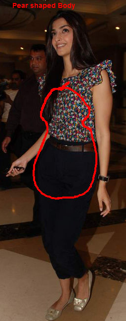
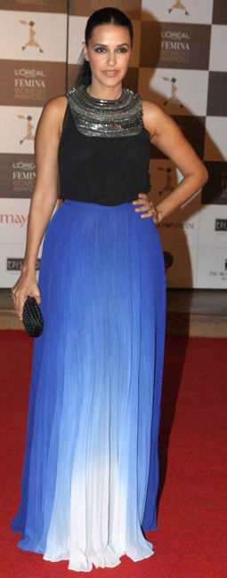
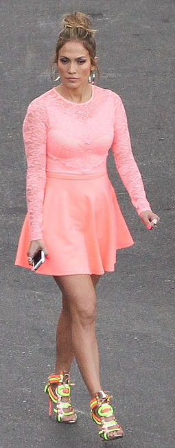
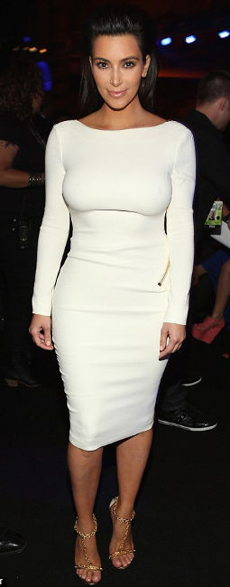
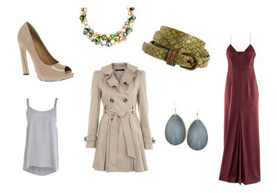
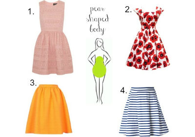

Your Body Doubles
- 
- 
- 
- 
What to wear ?
The most common figure proportion for women is the pear shape. What that means is that the widest part of your body is below your waist, around your hips. Remember, you can be tall, short, heavy, or skinny and still be pear shaped.
Many pear shapes also have a small bust, narrow shoulders, and defined waist.
De-emphasize, Define, Elongate
The first part of a conventional figure flattery for pear shape is creating balance between upper and lower halves. It involves deemphasizing the lower half, defining the waistline and elongating the leg line.
Drawing Attention Upwards
The second part of conventional figure flattery for pear shapes is to draw attention upwards.
- 
- 